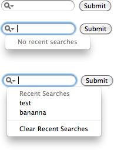

<input type=search>
<input type=search results=5>
<input type=ssearch results=5 autosave=a_unique_value>Live Demo

Firefox 3.6 |
Firefox 4 |

Safari 5 |

Safari Mobile iOS 4 |

Chrome 6+ |

Opera 10.6+ |

IE
10 |
IE 10 PP2 |

Android 2.3 |
|---|---|---|---|---|---|---|---|---|
 |
|
|
|
|
|
|
|
|
Supported Browser Screenshots |
The Low Down
The
|